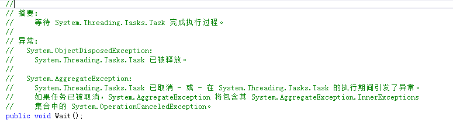
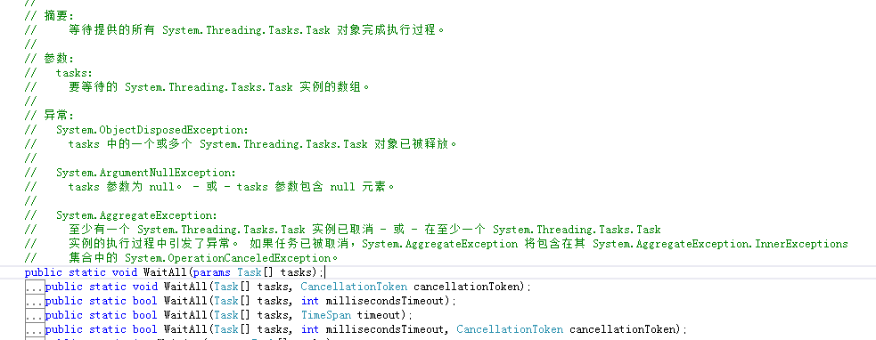

created by xyzko1
对于多线程，我们经常使用的是Thread。在我们了解Task之前，如果我们要使用多核的功能可能就会自己来开线程，然而这种线程模型在.net 4.0之后被一种称为基于“任务的编程模型”所冲击，因为task会比thread具有更小的性能开销，不过大家肯定会有疑惑，任务和线程到底有什么区别呢？
认识Task和Task的基本使用 认识Task 首先来看一下Task的继承结构。Task标识一个异步操作。
创建Task 创建Task的方法有两种，一种是直接创建——new一个出来，一种是通过工厂创建。下面来看一下这两种创建方法：
1 2 3 4 5 var task1 = new Task(() => { });
这是最简单的创建方法，可以看到其构造函数是一个Action，其构造函数有如下几种，比较常用的是前两种。
1 2 3 4 5 var task2 = Task.Factory.StartNew(() => { });
这种方式通过静态工厂，创建以个Task并运行。下面我们来建一个控制台项目，演示一下，代码如下：
1 2 3 4 5 6 7 8 9 10 11 12 13 14 15 16 17 18 19 20 21 22 23 24 25 26 27 using System;using System.Collections.Generic;using System.Linq;using System.Text;using System.Threading.Tasks;namespace TaskDemo{ class Program { static void Main (string [] args) { var task1 = new Task (() => { Console .WriteLine("Hello,task" ); }); task1.Start(); var task2 = Task .Factory.StartNew(() => { Console .WriteLine("Hello,task started by task factory" ); }); Console .Read(); } } }
这里我分别用两种方式创建两个task,并让他们运行。可以看到通过构造函数创建的task,必须手动Start,而通过工厂创建的Task直接就启动了。
1 2 3 4 5 6 7 8 9 10 11 12 13 var task1 = new Task (() => { Console .WriteLine("Begin" ); System.Threading.Thread.Sleep(2000 ); Console .WriteLine("Finish" ); }); Console .WriteLine("Before start:" + task1.Status); task1.Start(); Console .WriteLine("After start:" + task1.Status); task1.Wait(); Console .WriteLine("After Finish:" + task1.Status); Console .Read();
task1.Status就是输出task的当前状态，其输出结果如下：
Task的任务控制 Task最吸引人的地方就是他的任务控制了，你可以很好的控制task的执行顺序，让多个task有序的工作。下面来详细说一下：
Task.Wait 在上个例子中，我们已经使用过了，task1.Wait();就是等待任务执行完成，我们可以看到最后task1的状态变为Completed。
Task.WaitAll 看字面意思就知道，就是等待所有的任务都执行完成，下面我们来写一段代码演示一下：
1 2 3 4 5 6 7 8 9 10 11 12 13 14 15 16 17 18 19 20 21 22 static void Main (string [] args) { var task1 = new Task (() => { Console .WriteLine("Task 1 Begin" ); System.Threading.Thread.Sleep(2000 ); Console .WriteLine("Task 1 Finish" ); }); var task2 = new Task (() => { Console .WriteLine("Task 2 Begin" ); System.Threading.Thread.Sleep(3000 ); Console .WriteLine("Task 2 Finish" ); }); task1.Start(); task2.Start(); Task .WaitAll(task1, task2); Console .WriteLine("All task finished!" ); Console .Read(); }
其输出结果如下：
Task.WaitAny 这个用法同Task.WaitAll，就是等待任何一个任务完成就继续向下执行，将上面的代码WaitAll替换为WaitAny，输出结果如下：
Task.ContinueWith 就是在第一个Task完成后自动启动下一个Task，实现Task的延续，下面我们来看下他的用法，编写如下代码：
1 2 3 4 5 6 7 8 9 10 11 12 13 14 15 16 17 18 19 20 21 22 23 24 25 26 27 28 29 static void Main (string [] args) { var task1 = new Task (() => { Console .WriteLine("Task 1 Begin" ); System.Threading.Thread.Sleep(2000 ); Console .WriteLine("Task 1 Finish" ); }); var task2 = new Task (() => { Console .WriteLine("Task 2 Begin" ); System.Threading.Thread.Sleep(3000 ); Console .WriteLine("Task 2 Finish" ); }); task1.Start(); task2.Start(); var result = task1.ContinueWith<string >(task => { Console .WriteLine("task1 finished!" ); return "This is task result!" ; }); Console .WriteLine(result.Result.ToString()); Console .Read(); }
执行结果如下：
1 2 3 4 5 6 7 8 9 10 11 12 13 14 var SendFeedBackTask = Task.Factory.StartNew(() =>"Get some Data!" ); }) .ContinueWith<bool>(s =>return true ; }) .ContinueWith<string >(r => { if (r.Result) { return "Finished" ; } else { return "Error" ; } }); Console.WriteLine(SendFeedBackTask.Result);
首先输出Get some data,然后执行第二个获得返回值true,最后根据判断返回Finished或error。输出结果:
1 Task.Factory.StartNew<string >((return "One";} ).ContinueWith (ss => { Console.WriteLine(ss.Result );} );
输出One，这个可以看明白了吧~
Task的取消 前面说了那么多Task的用法，下面来说下Task的取消，比如我们启动了一个task,出现异常或者用户点击取消等等，我们可以取消这个任务。
1 2 3 4 5 6 7 8 9 10 11 12 13 14 15 16 17 18 19 20 21 22 var tokenSource = new CancellationTokenSource(); var token = tokenSource.Token ; var task = Task.Factory.StartNew(() => { for (var i = 0; i < 1000; i++) { System.Threading.Thread.Sleep (1000); if (token .IsCancellationRequested) { Console.WriteLine("Abort mission success!" ); return ; } } }, token ); token .Register(() => { Console.WriteLine("Canceled" ); }); Console.WriteLine("Press enter to cancel task..." ); Console.ReadKey(); tokenSource.Cancel(); Console.ReadKey();
这里开启了一个Task,并给token注册了一个方法，输出一条信息，然后执行ReadKey开始等待用户输入，用户点击回车后，执行tokenSource.Cancel方法，取消任务。其输出结果如下：
好了，今天先说道这里，明天继续讲task，接下来该说说task的异常处理和其他的一些用法，如果喜欢可以关注我，一有更新会马上通知你。
1 2 3 4 5 6 7 8 9 10 11 12 13 14 15 16 17 18 19 20 21 22 23 24 25 26 27 28 29 30 31 32 static object o = new object(); static void Main (string [] args) { var tf = new TaskFactory(); Task t1 = tf.StartNew(TaskMenthod, "1" ); Task t2 = Task .Factory.StartNew(TaskMenthod, "2" ); Task t3 = new System.Threading.Tasks.Task (TaskMenthod, "3" ); t3.Start(); Task t4 = Task .Run(() => TaskMenthod("4" )); Task t5 = Task .Run(() => TaskMenthod("5" )); Task t6 = Task .Run(() => TaskMenthod("6" )); Task t7 = Task .Run(() => TaskMenthod("7" )); Task t8 = Task .Run(() => TaskMenthod("8" )); Task t9 = Task .Run(() => TaskMenthod("9" )); Task t10 = Task .Run(() => TaskMenthod("10" )); Console .ReadKey(); } static void TaskMenthod (object title) { lock (o) { Console .WriteLine(title.ToString()); Console .WriteLine(title.ToString()); Console .WriteLine(title.ToString()); Console .WriteLine(title.ToString()); } }
运行结果
Task的Wait方法 
1 2 3 4 5 6 7 8 9 10 11 12 13 14 15 16 17 18 19 20 21 22 23 24 25 26 27 28 29 30 31 32 33 34 class Program { static object o = new object(); static void Main (string [] args) { var tf = new TaskFactory(); Task t1 = tf.StartNew(TaskMenthod, "1" ); t1.Wait(); Task t2 = Task .Factory.StartNew(TaskMenthod, "2" ); t2.Wait(); Task t3 = new System.Threading.Tasks.Task (() => TaskMenthod("3" )); t3.Start(); t3.Wait(); Task t4 = Task .Run(() => TaskMenthod("4" )); t4.Wait(); Task t5 = Task .Run(() => TaskMenthod("5" )); Task t6 = Task .Run(() => TaskMenthod("6" )); Task t7 = Task .Run(() => TaskMenthod("7" )); Task t8 = Task .Run(() => TaskMenthod("8" )); Task t9 = Task .Run(() => TaskMenthod("9" )); Task t10 = Task .Run(() => TaskMenthod("10" )); Console .ReadKey(); } static void TaskMenthod (object title) { lock (o) { Console .WriteLine(title); } } }
以上程序中t1 t2 t3 t4 这四个Task进行了Wait操作，也就是说：其他程序必须等待线程 1 2 3 4 执行完毕后，才能执行，而且线程 1 2 3 4 完全按照代码编写顺序进行输出。
Task的WaitAll方法 
1 2 3 4 5 6 7 8 9 10 11 12 13 14 15 16 17 18 19 20 21 22 23 24 25 26 27 28 29 30 31 class Program { static object o = new object(); static void Main (string [] args) { var tf = new TaskFactory(); Task t1 = tf.StartNew(TaskMenthod, "1" ); Task t2 = Task .Factory.StartNew(TaskMenthod, "2" ); Task t3 = new System.Threading.Tasks.Task (() => TaskMenthod("3" )); t3.Start(); Task t4 = Task .Run(() => TaskMenthod("4" )); Task .WaitAll(t1, t2, t3, t4); Task t5 = Task .Run(() => TaskMenthod("5" )); Task t6 = Task .Run(() => TaskMenthod("6" )); Task t7 = Task .Run(() => TaskMenthod("7" )); Task t8 = Task .Run(() => TaskMenthod("8" )); Task t9 = Task .Run(() => TaskMenthod("9" )); Task t10 = Task .Run(() => TaskMenthod("10" )); Console .ReadKey(); } static void TaskMenthod (object title) { lock (o) { Console .WriteLine(title); } } }
上面有句注释：Task.WaitAll(t1, t2, t3, t4); //优先执行线程1 2 3 4 线程 1 2 3 4 之间是异步的，也就是说执行顺序是无序的 待线程 1 2 3 4 执行完毕后 才会执行后续的线程
1 2 3 4 5 6 7 8 9 10 11 12 13 14 15 16 17 18 19 20 21 22 23 24 25 26 27 28 29 30 31 class Program { static object o = new object(); static void Main (string [] args) { var tf = new TaskFactory(); Task t1 = tf.StartNew(TaskMenthod, "1" ); Task t2 = Task .Factory.StartNew(TaskMenthod, "2" ); Task t3 = new System.Threading.Tasks.Task (() => TaskMenthod("3" )); Task t4 = Task .Run(() => TaskMenthod("4" )); Task .WaitAll(t1, t2, t3, t4); Task t5 = Task .Run(() => TaskMenthod("5" )); Task t6 = Task .Run(() => TaskMenthod("6" )); Task t7 = Task .Run(() => TaskMenthod("7" )); Task t8 = Task .Run(() => TaskMenthod("8" )); Task t9 = Task .Run(() => TaskMenthod("9" )); Task t10 = Task .Run(() => TaskMenthod("10" )); Console .ReadKey(); } static void TaskMenthod (object title) { lock (o) { Console .WriteLine(title); } } }
执行结果：
1 2 3 4 5 6 7 8 9 10 11 12 13 14 15 16 17 18 19 20 21 22 23 24 25 26 27 28 29 30 31 32 33 class Program { static object o = new object(); static void Main (string [] args) { var tf = new TaskFactory(); Task t1 = tf.StartNew(TaskMenthod, "1" ); Task t2 = Task .Factory.StartNew(TaskMenthod, "2" ); Task t3 = new System.Threading.Tasks.Task (() => TaskMenthod("3" )); Task t4 = Task .Run(() => TaskMenthod("4" )); Task [] tskArray = new Task [] { t1, t2, t3, t4 }; Task .WaitAll(tskArray,3000 ); Task t5 = Task .Run(() => TaskMenthod("5" )); Task t6 = Task .Run(() => TaskMenthod("6" )); Task t7 = Task .Run(() => TaskMenthod("7" )); Task t8 = Task .Run(() => TaskMenthod("8" )); Task t9 = Task .Run(() => TaskMenthod("9" )); Task t10 = Task .Run(() => TaskMenthod("10" )); Console .ReadKey(); } static void TaskMenthod (object title) { lock (o) { Console .WriteLine(title); } } }
这样，在程序等待三秒后，会执行后续操作！
WaitAny 方法，既是等待任意线程执行完毕后，执行后续方法 将上述程序中的WaitAll 修改成WaitAny 试一下
1 2 3 4 5 6 7 8 9 10 11 12 13 14 15 16 17 18 19 20 21 22 23 24 25 26 27 28 29 30 31 32 class Program { static object o = new object(); static void Main (string [] args) { var tf = new TaskFactory(); Task t1 = tf.StartNew(TaskMenthod, "1" ); Task t2 = Task .Factory.StartNew(TaskMenthod, "2" ); Task t3 = new System.Threading.Tasks.Task (() => TaskMenthod("3" )); Task t4 = Task .Run(() => TaskMenthod("4" )); Task .WaitAny(t1, t2, t3, t4); Task t5 = Task .Run(() => TaskMenthod("5" )); Task t6 = Task .Run(() => TaskMenthod("6" )); Task t7 = Task .Run(() => TaskMenthod("7" )); Task t8 = Task .Run(() => TaskMenthod("8" )); Task t9 = Task .Run(() => TaskMenthod("9" )); Task t10 = Task .Run(() => TaskMenthod("10" )); Console .ReadKey(); } static void TaskMenthod (object title) { lock (o) { Console .WriteLine(title); } } }
Please Star this Project if you like it! Follow would also be appreciated!